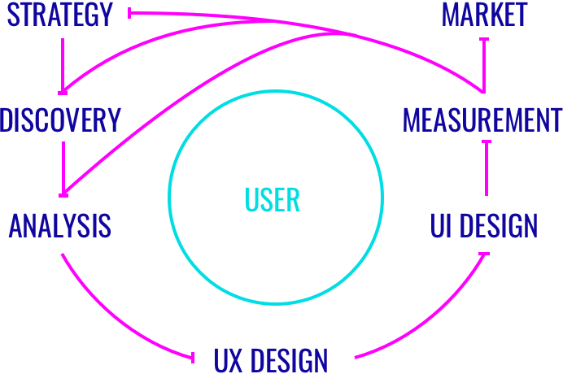

What is my design process? The short answer: it depends.
Design is a fundamentally creative act made better with structure. Established best practices and continually emerging methods should be mixed and merged as needed to fit within the triangulation of time, resources, and requirements. The design process should itself be designed.
My experience has led me to trust the backbone of process outlined here. Good process can be built from this:
Measurement feeds back into Analysis, creating the loop needed central to LEAN UX.
The design process illustrated as a user-centric feedback loop:
Measurement will influence all steps, however UX Design inherits knowledge from the previous three. When possible, a designer should update Strategy, do any rediscovery, and reanalyze new data prior to diving back into UX.
Design disciplines, in many contexts, can be thought of as nested blocks of increasingly specific skills, tools, and artifacts. I consider Visual Design and Interaction Design to be siblings within the larger framing discipline of User Interface Design.
Each design discipline contains specific skills, tools, and artifacts. Here is a closer, yet immediately incomplete, look at each step in the design process from above:
A project benefits from a solid strategy. Here, the guiding principles, timeline, resources, goals, success metrics, ownership, and scheme are defined. Strategy sets the initial and overall shape of the project and provides challenges for the design team to solve.
Research is a critical step in the process. It is most important during project initiation but maintains value as Measurement provides new questions for the designer to answer.
Both Discovery and Measurement lead to Analysis. It is important to analyze data with as much of a cross-functional team as is available to bring varied perspectives and get the most out of research and testing results.
The user's success is the product's success. UX Design defines all of the user-product interaction and maintains the widest and deepest possible perspective as a project matures.
Where UX Design is intangible, User Interface Design produces tangible artifacts that users can interact with. UI Design encompasses motion and interaction design disciplines as well as visual design. Here, the rubber meets the road.
Design is a rational art form, requiring data to prove and disprove existing design decisions. Measuring the user and the product are critical to continuous product improvement.
With defensible proof of design success in hand, the product team can go to market. This step is distinct due to the market-facing design deliverables required to maximize a launch or update. UX design must consider all aspects of a user's product interaction, from their first brand experience to their last.